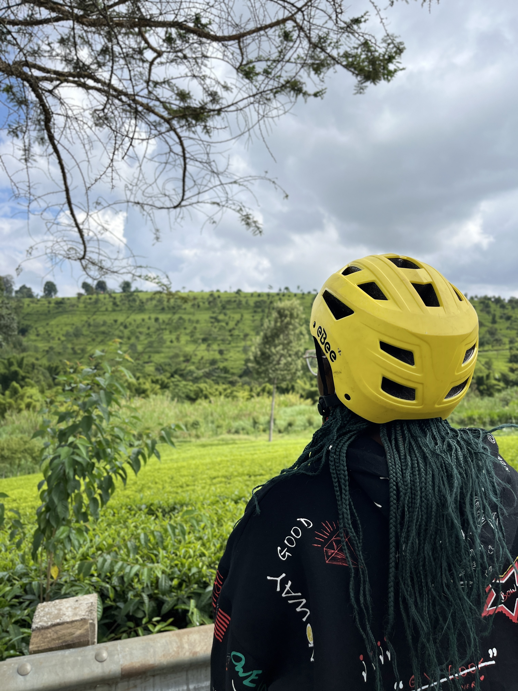
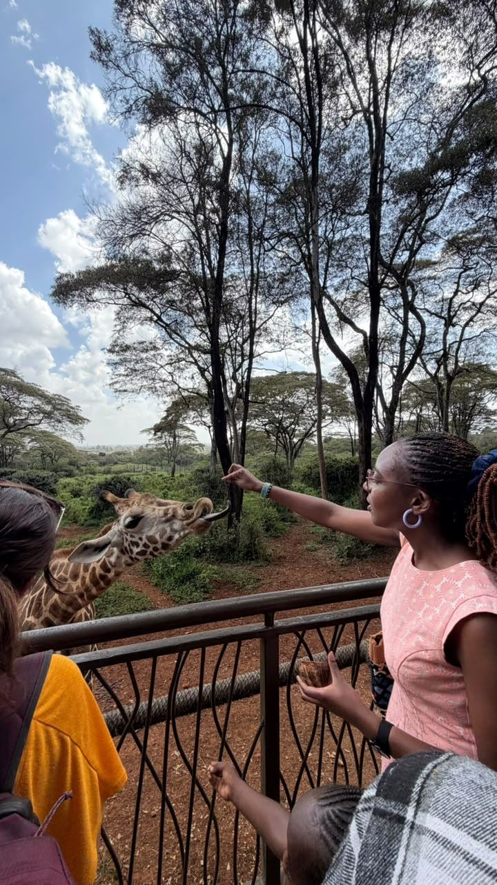
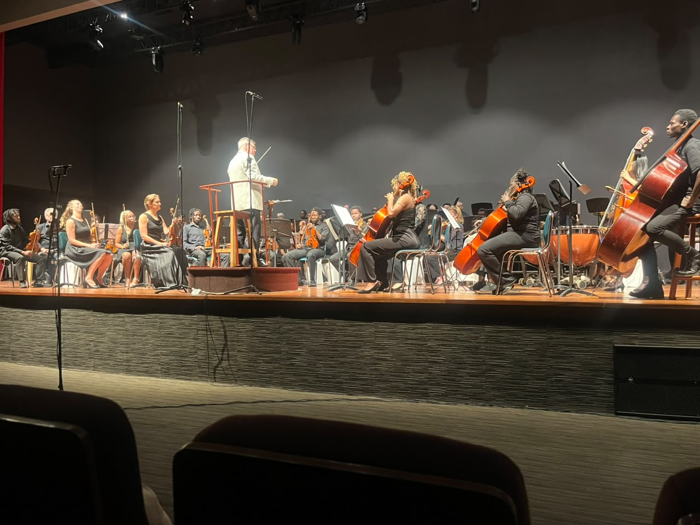
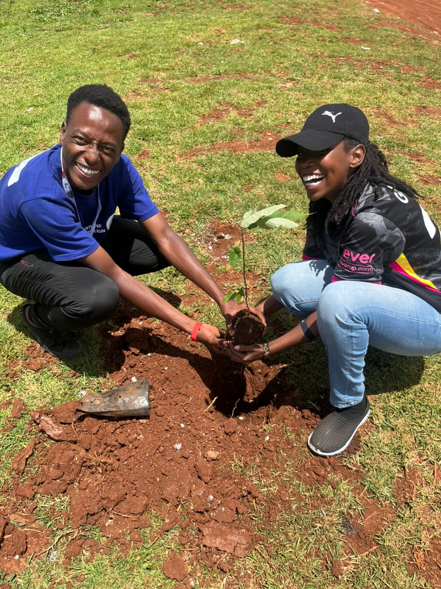
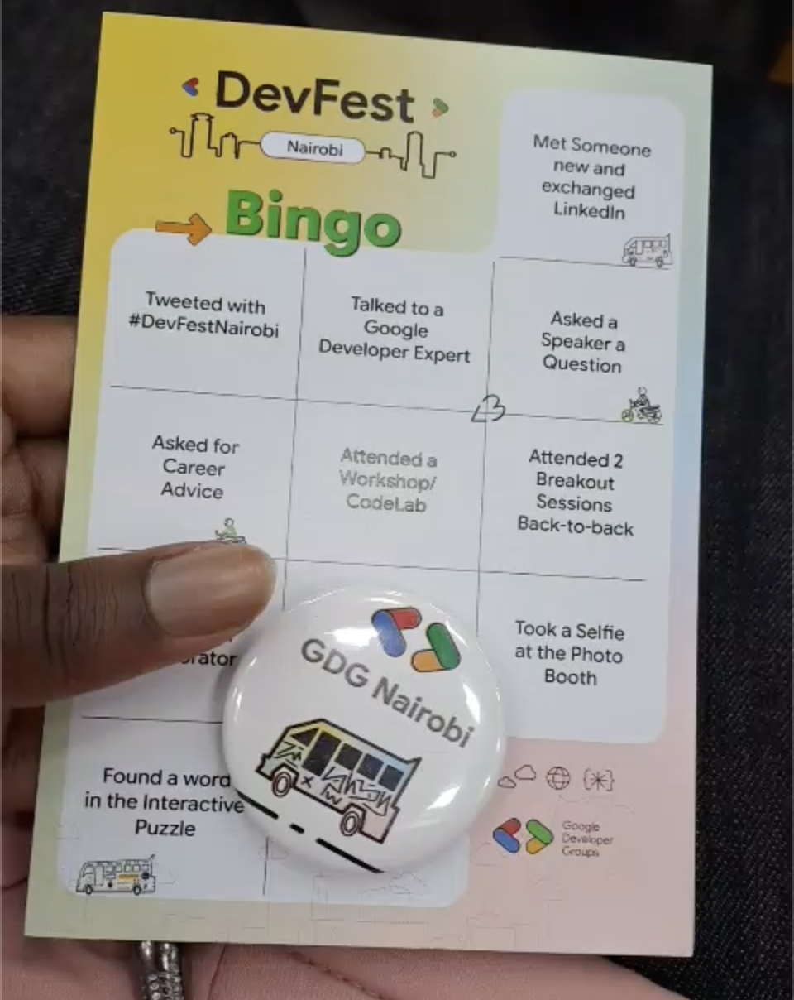
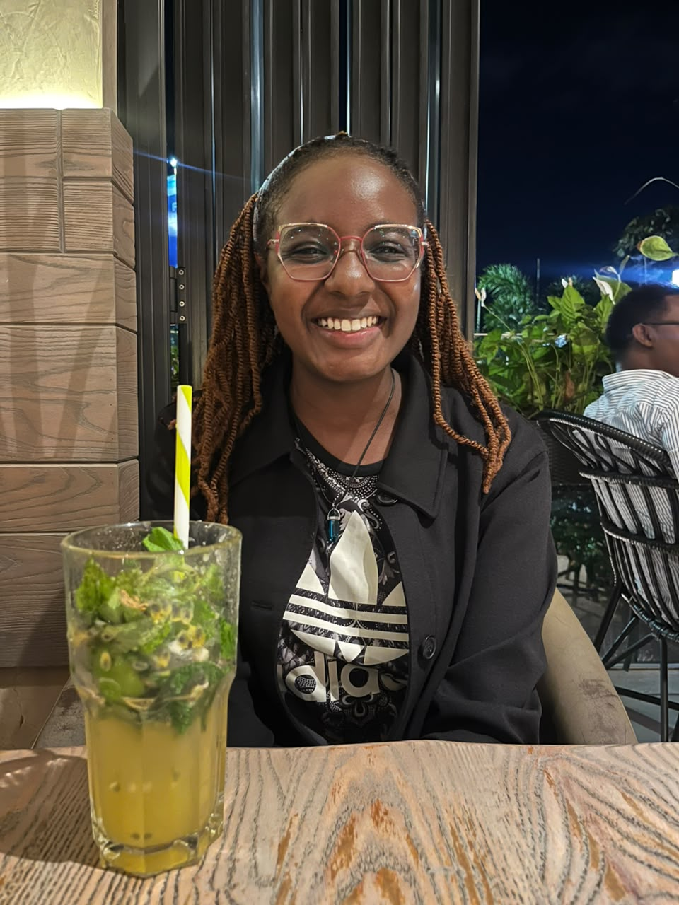

Beyond work, I love staying active and connected to nature whether cycling, volunteering on tree-planting projects with friends, or visiting wildlife spots like feeding giraffes. I enjoy good food and sweet treats like frozen yogurt, going bowling, and catching movies at the cinema with family. I am also passionate about music especially attending live orchestra performances and regularly stay plugged into the local tech community through events like GDG DevFest Nairobi